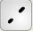

| Kábel Típusok | Leírás |
| Console | Console kapcsolatok létesíthetők a számítógépek és az útválasztók vagy kapcsolók között. Bizonyos feltételeknek teljesülniük kell ahhoz, hogy a PC-konzol munkamenet működjön: a kapcsolat mindkét oldalán a sebességnek azonosnak kell lennie, az adatbiteknek mindkettőnél 7-nek, vagy 8-nak kell lennie, a paritásnak meg kell egyeznie, a stop biteknek 1-nek vagy 2-nek kell lennie (de nem feltétlenül kell azonosnak lenniük), és az forgalom szabályzás bármelyik fél számára bármi lehet. |
| Copper Straight-Trough | Ez a kábeltípus a szokásos Ethernet adathordozó a különböző OSI rétegeken működő eszközök közötti csatlakozáshoz (például hub-ból routerbe, switchből PC-be és routerből hub-ba). A következő porttípusokhoz csatlakoztatható: 10 Mbps Copper (Ethernet), 100 Mbps Copper (Fast Ethernet) és 1000 Mbps Copper (Gigabit Ethernet). |
|  Copper Cross-over | Ez a kábeltípus az ugyanazon OSI rétegben működő eszközök (például hub-hub, PC-PC, PC-nyomtató) közötti csatlakozáshoz szükséges Ethernet adathordozó. A következő porttípusokhoz csatlakoztatható: 10 Mbps Copper (Ethernet), 100 Mbps Copper (Fast Ethernet) és 1000 Mbps Copper (Gigabit Ethernet). |
| Fiber | A fiber adathordozókat a fiber portok közötti kapcsolatok létesítésére használják (100 Mbps vagy 1000 Mbps). |
| Phone | Telefonvonal kapcsolat csak modem porttal rendelkező eszközök között létesíthető. A modemcsatlakozások szokásos alkalmazása egy end device (például PC), amely hálózati felhőbe tárcsáz. |
| Coaxial | A coaxial adathordozókat coaxial portok közötti összeköttetésre használjuk, mintha például egy kábelmodemet kapcsolnánk egy Packet Tracer Cloudhoz. |
| Serial DCE and DTE | A WAN-kapcsolatokhoz gyakran használt serial kapcsolatokat össze kell kötni a serial portokkal. Ne feledje, hogy engedélyeznie kell az órajelzést a DCE oldalon a line protokoll megjelenítéséhez. A DTE órajel opcionális. A port melletti kis „óra” ikon segítségével megmondhatja, hogy a kapcsolat melyik vége a DCE oldal. Ha a serial DCE kapcsolattípust választja, majd két eszközt csatlakoztat, az első eszköz a DCE oldalra, a második pedig automatikusan a DTE oldalra kerül. Ez fordítva igaz, ha a serial DTE kapcsolattípust választja. |
| Octal | A 8 portos aszinkron kábel biztosítja az egyik végén a nagy sűrűségű csatlakozót, a másik oldalon pedig nyolc RJ-45 csatlakozót. |
| IoE Costum Cable | Egy kábel dolgok, alkatrészek, mikrokontrollerek (MCU-PT) és egypaneles számítógépek (SBC-PT) csatlakoztatásához. A kábel összeköti a földet, az áramellátást és az adatvezetékeket. |
| USB | Az USB kábel egy olyan kábel, amellyel a dolgokat, alkatrészeket, mikrovezérlőket (MCU-PT) és egypaneles számítógépeket (SBC-PT) csatlakoztathatja adatkapcsolatként. |